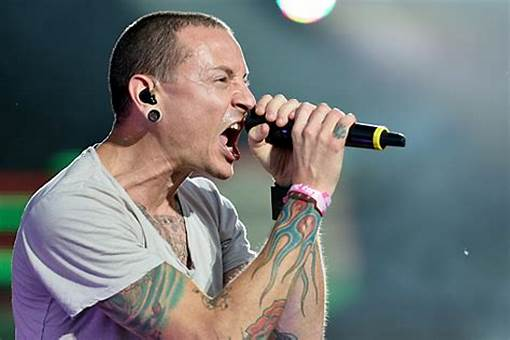
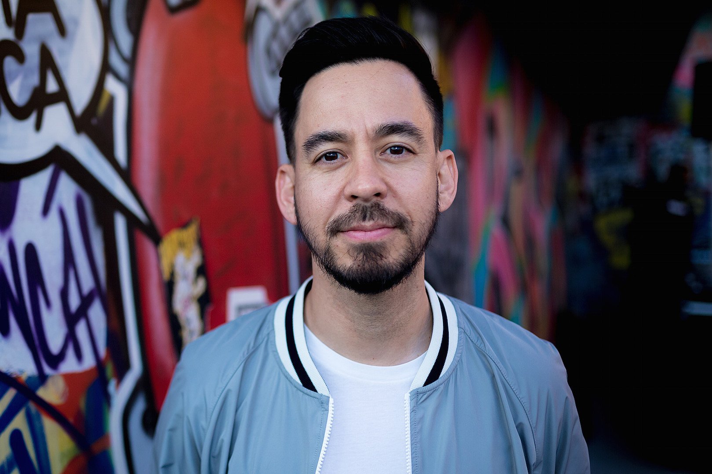
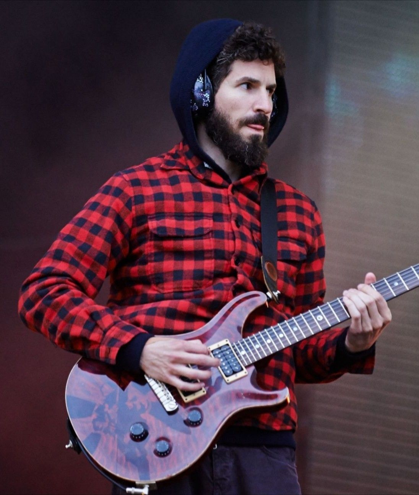
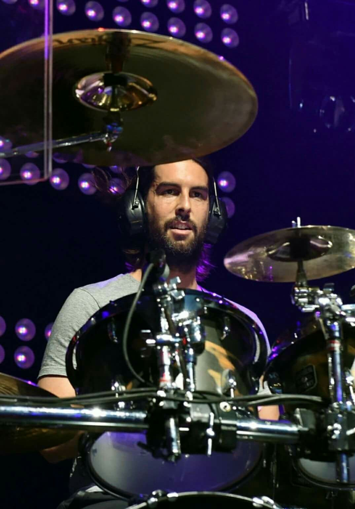
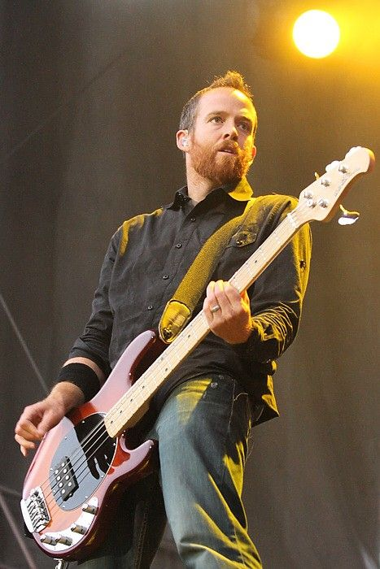
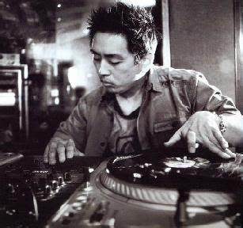

Linkin Park se componia por las siguintes personas hasta el 2017 cuando el vocalista principal,Chester Bennington,decidio suicidarse.Dejando una gran huella en los corazones de sus seguidores.
Chester Bennington
Chester Bennington, nacido el 20 de marzo de 1976, fue el vocalista principal de Linkin Park desde 1999 hasta su trágica muerte en 2017. Su voz poderosa y su emotividad resonaban en las letras de la banda, convirtiéndolo en una figura icónica del rock moderno. Chester también tuvo éxito con otros proyectos, como Dead by Sunrise y su colaboración con Stone Temple Pilots. Su legado perdura a través de su música y la profunda conexión que estableció con los fanáticos, así como su influencia en generaciones de artistas.

Mike Shinoda
Mike Shinoda es el vocalista, rapero, guitarrista y tecladista de Linkin Park. Nacido el 11 de febrero de 1977, es uno de los fundadores de la banda. Su estilo combina rap y canto melódico, lo que ha sido fundamental en el sonido distintivo del grupo. Además de su trabajo en Linkin Park, Mike ha explorado su carrera en solitario con su proyecto Fort Minor, donde lanzó el álbum "The Rising Tied" en 2005, que incluye el exitoso sencillo "Where'd You Go". También ha trabajado como productor, colaborando con numerosos artistas y contribuyendo a la producción de álbumes de la banda

Brad Delson
Brad Delson, nacido el 1 de diciembre de 1977, es el guitarrista principal de la banda. Su enfoque innovador y su uso de técnicas poco convencionales han definido el sonido de Linkin Park. Es conocido por su uso de efectos y su estilo de guitarra rítmica, que complementa perfectamente las voces de Shinoda y Bennington. Además de su trabajo con la banda, Brad ha sido un defensor de la educación musical y ha hablado sobre la importancia de la creatividad en la música.

Rob Bourdon
Rob Bourdon, nacido el 20 de enero de 1979, es el baterista de Linkin Park y ha sido parte de la banda desde su formación. Su estilo rítmico característico y su técnica precisa aportan una base sólida a las composiciones del grupo. Rob también ha sido involucrado en proyectos paralelos y ha participado en la producción de la música de la banda. Su pasión por la música se refleja en su energía en el escenario.

Dave "Phoenix" Farrell
Dave "Phoenix" Farrell, nacido el 8 de febrero de 1977, es el bajista de Linkin Park. Se unió a la banda en sus primeros años y su presencia en el escenario es muy notable. Phoenix ha trabajado en otros proyectos musicales, incluido su tiempo con la banda de rock "Tasty Snax". Su capacidad para crear líneas de bajo memorables y su estilo de tocar han contribuido a la fusión de géneros en la música de Linkin Park.

Joe Hahn (Mr. Hahn)
Joe Hahn, conocido como Mr. Hahn, es el DJ y sampler de la banda, nacido el 15 de marzo de 1977. Su trabajo con efectos de sonido, samples y secuencias electrónicas ha sido clave para la identidad musical de Linkin Park. Joe ha colaborado en la creación de varios de los álbumes de la banda y ha trabajado en proyectos cinematográficos, mostrando su versatilidad artística. Su enfoque creativo ha permitido que Linkin Park combine rock, hip hop y elementos electrónicos de manera única.

Hasta el año 2024,donde se unio a la banda la vocalista Emily Armstrong
Emily Armstrong
Emily Marcia Armstrong (Los Ángeles, 6 de mayo de 1986) es una cantante, música y compositora estadounidense, conocida por ser la vocalista principal de la banda Linkin Park desde 2024. También es cofundadora y miembro de la banda Dead Sara.
Armstrong nació y creció en Los Ángeles, California. Sus padres eran miembros destacados de la Iglesia de la Cienciología y ella fue criada como ciencióloga.3 Comenzó a componer canciones con la guitarra cuando tenía 11 años, y a cantar cuando tenía 15. Abandonó la escuela secundaria, sabiendo que quería estar en una banda de rock tan pronto como tomó la guitarra por primera vez, sin interés en dedicarse a otra cosa